这里主要记录Guava提供的一些工具类的用法。
Strings
空和null相互转换：
1 | String s1 = Strings.emptyToNull(""); |
获取相同的前缀和后缀：
1 | String s3 = Strings.commonPrefix("mrbird", "mr.right"); |
repeat重复操作：
1 | String s5 = Strings.repeat("mrbird", 3); |
判断字符串是否为空或null：
1 | boolean nullOrEmpty = Strings.isNullOrEmpty(null); |
左侧填充和右侧填充：
1 | String s6 = Strings.padStart("01", 5, '0'); |
StopWatcher
StopWatcher用于监测一段程序的执行耗时。我们之前通常的做法是：
1 | System.out.println("程序开始处理"); |
使用StopWatcher方便之处在于它会帮我们选取合适的时间单位：
1 | System.out.println("程序开始处理"); |
Preconditions断言
断言常用于类库设计中方法参数的判断，当参数不符合要求时，让程序提前抛异常结束。Preconditions是Guava提供的断言类。
非空校验
判断是否为空，为空的话抛出NullPointerException：
1 | List<String> list = null; |
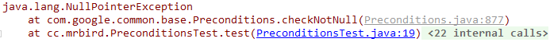
自定义描述：
1 | List<String> list = null; |
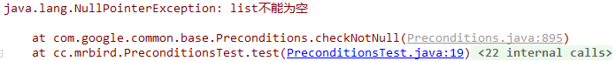
自定义描述 + 长度校验：
1 | List<String> list = null; |
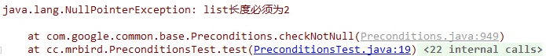
参数校验
校验不通过时，抛出IllegalArgumentException：
1 | String value = "hello"; |
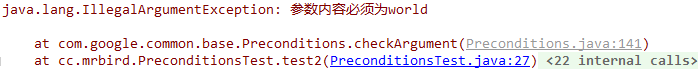
状态校验
校验不通过时，抛出IllegalStateException：
1 | String state = "on"; |
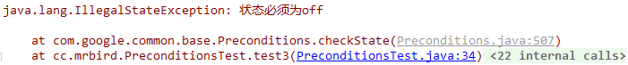
校验元素个数
校验不通过，抛出IndexOutOfBoundsException：
1 | List<String> list = ImmutableList.of(); |
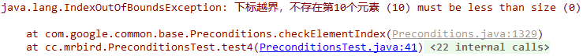
IO操作
演示之前先创建一个source.txt文件：
1 | Guava I/O operation |
相关常量：
1 | private static final String SOURCE_FILE = "C:\\Users\\Administrator\\Desktop\\guavatest\\src\\test\\java\\cc\\mrbird\\resources\\source.txt"; |
文件拷贝
1 | File targetFile = new File(TARGET_FILE); |
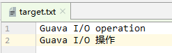
文件移动
1 | Files.move(new File(SOURCE_FILE), new File(TARGET_FILE)); |
文件移动和文件拷贝的区别是，文件移动会删除源文件：
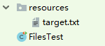
读取文件内容
将文件内容读取到String集合中：
1 | List<String> list = Files.readLines(new File(SOURCE_FILE), Charsets.UTF_8); |

读的过程中进行一些加工：
1 | LineProcessor<List<String>> lineProcessor = new LineProcessor<List<String>>() { |
写操作
追加操作：
1 | File file = new File(SOURCE_FILE); |

覆盖操作：
1 | File file = new File(SOURCE_FILE); |
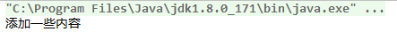
文件转为哈希码
1 | File file = new File(SOURCE_FILE); |
文件创建
1 | String TOUCH_FILE = "C:\\Users\\Administrator\\Desktop\\guavatest\\src\\test\\java\\cc\\mrbird\\resources\\new.txt"; |
递归操作
由浅入深：
1 | File file = new File("C:\\Users\\Administrator\\Desktop\\guavatest\\src\\test\\java\\cc\\mrbird"); |
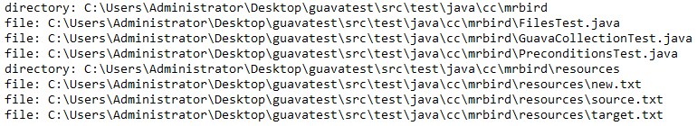
由深入浅：
1 | File file = new File("C:\\Users\\Administrator\\Desktop\\guavatest\\src\\test\\java\\cc\\mrbird"); |
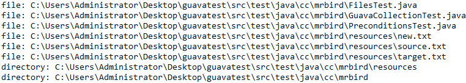